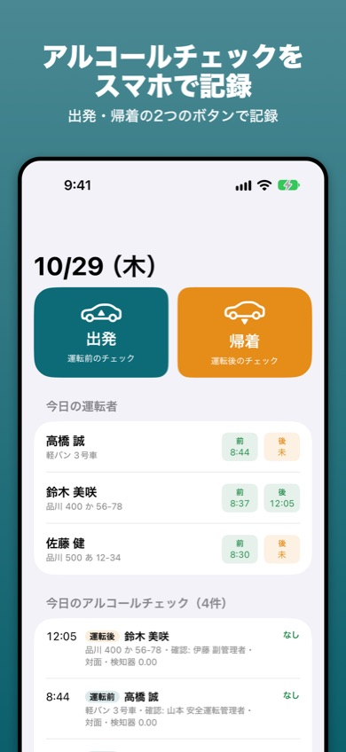
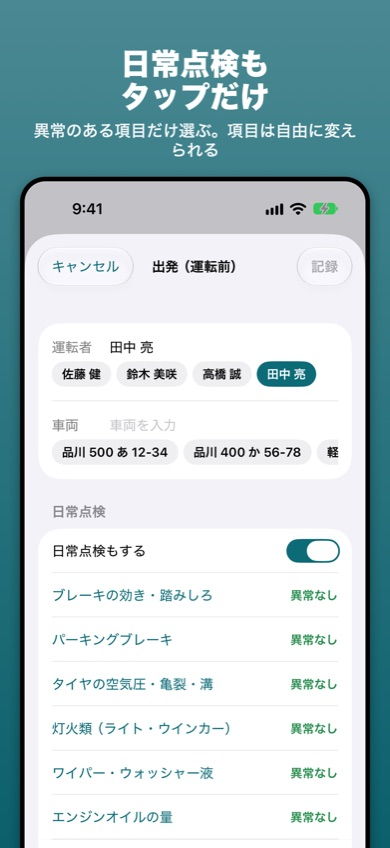

社用車の記録簿
社用車の運転前・運転後のアルコールチェック、運転日報、日常点検をスマホで記録するiPhone・iPadアプリです。紙やExcelの記録簿を、タップ中心の入力に置きかえます。
iPhone・iPad（iOS 17以降）・無料（広告あり）


できること
- 出発・帰着の2つのボタン：運転前のアルコールチェックと日常点検・運転日報の開始を「出発」で、運転後のチェックと日報の終了を「帰着」でまとめて記録します。
- 記録の項目：確認者・運転者・車両・日時・確認方法（対面・電話・ビデオ通話など）・アルコール検知器の使用と数値・酒気帯びの有無・指示事項。
- 運転日報：出発・帰着の時刻、メーター、走行距離、行き先・用務。
- 日常点検：ブレーキ・タイヤ・灯火類など。異常のある項目だけタップ。項目は自由に変えられます。
- 月ごとの記録簿：アルコールチェック・運転日報・日常点検を、A4横のPDF（印刷用）やCSV（Excel）で書き出せます。
- 記録忘れの通知：出発だけ記録して帰着がまだの運転者がいると、決まった時刻にお知らせします。
記録簿の書き方
アルコールチェックで記録する項目や保存期間は、アルコールチェック記録簿の書き方と無料テンプレートにまとめています（Excel・印刷用の記録簿つき）。
よくある質問
どんな事業所で使えますか
社用車（白ナンバー）を使う事業所の安全運転管理者・副安全運転管理者の方や、軽貨物の個人事業主の方などを想定しています。運転者・車両・確認者を登録すると、毎回タップで選べます。
運転者が直行直帰で対面できないときは？
確認方法で「電話」や「ビデオ通話」を選び、具体的な方法（例: 電話で声の調子を確認し、携帯型検知器の数値を報告）を記録できます。
記録はどこに保存されますか
この端末の中だけに保存し、外部には送りません。毎月「記録簿」からPDFやCSVで書き出して、パソコンなどにも保存しておくと安心です。
記録の保存期間は？
アルコールチェックの記録は1年間の保存が必要です。アプリでは1年より前の記録を自動では消しません（設定から削除できます）。
このアプリは記録の作成を助けるものです。法令の内容や必要な記録は、所轄の警察署や公式の情報で確認してください。
お問い合わせ
メール: tanacount.support@gmail.com
返信までお時間をいただく場合があります。